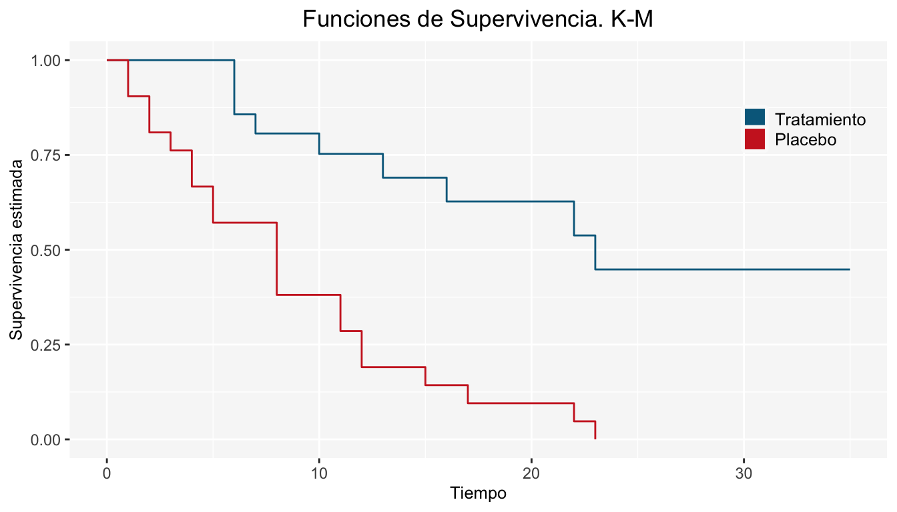

Capítulo 9 Pruebas de Hipótesis
Las pruebas de hipótesis juegan un papel importante en la inferencia estadística. En el contexto del análisis de supervivencia, resulta primordial comparar poblaciones en cuanto a sus funciones de supervivencia, pues de ello podemos saber, por ejemplo, la eficacia de un tratamiento respecto a otro, los tiempos de aparición de un tumor en dos grupos, entre otras cosas.
El objetivo de la comparación de poblaciones en el análisis de supervivencia es similar a aquellos procedimientos diseñados para comparar estadísticos provenientes de muestras independientes, como la prueba t, la prueba de los signos, la prueba U de Mann-Whitney(1947), la prueba de Kruskal-Wallis(1952), etcétera. Todas estas pruebas de comparación se utilizan para evaluar diferencias entre estadísticos que han sido estimados basados en la información que se obtiene de subgrupos poblacionales independientes entre si. No obstante, dichas pruebas no consideran la censura en los datos, y por esta razón se imposibilita su aplicación “directa” en datos de supervivencia.
Las pruebas más utilizadas para comparar funciones de supervivencia, las cuales consideran la censura en los datos, son: la prueba Log-Rank propuesta por Mantel-Haenszel(1959), la prueba generalizada de Wilcoxon propuesta por Gehan(1965), la prueba de Peto-Peto(1972), la prueba de Tarone-Ware(1977), la prueba de Harrington-Fleming(1982) que generaliza parte de las pruebas anteriores y una versión más general propuesta por Fleming et al. (1987). En esta sección veremos la prueba de Log-Rank y la prueba generalizada de Wilcoxon, que esencialmente son la misma salvo una ponderación.
9.1 Comparación de 1 población
Suponiendo que la tasa de riesgo real en la población estudiada es \(h(t)\), el objetivo en esta prueba es determinar, estadisticamente, si la tasa de riesgo \(h_0(t)\), la cual está completamente especificado en el intervalo \((0,\tau)\), es adecuada para las observaciones a tratar para un tiempo fijo \(\tau\), es decir:
\[ \begin{array}{ccc} H_0:h(t) = h_0(t)\ \forall \ t\leq \tau&vs& H_a:h(t) \neq h_0(t);\ \mbox{ p.a } \ t\leq \tau \end{array} \]
Recordando que el estimador de la función de riesgo acumulado es \(\hat{H}_2(t) = \sum_{t_{i}\leq t}\frac{d_i}{n_i}\), entonces \(\frac{d_i}{n_i}\) es un estimador de la tasa de riesgo en \(t_i\).
Cuando la hipótesis nula es cierta, el valor esperado de la tasa de riesgo en \(t_i\) es \(h_0(ti)\). Ahora, sea \(\omega(t)\) la función de pesos tal que \(\omega(t) = 0\) si \(n_t = 0\), es decir que no se otorga algún peso cuando no hay elementos en dicho tiempo.
Considerando el clásico estadístico de prueba \(Z(\tau) = O(\tau)-\mathbb{E}(\tau)\) (elementos observados menos esperados)3 y considerando que \(D\) es el número de tiempos en la muestra, se tiene lo siguiente:
\[ Z(\tau) = O(\tau)-\mathbb{E}(\tau) = \sum_{i = 1}^D\omega(ti)\frac{d_i}{n_i}-\int_0^{\tau}\omega(s)h_0(s)ds \] Sólo para confirmar, \(O(\tau)\) representa el número de eventos al tiempo \(\tau\). Cuando \(H_0\) es cierta
\[ Var(Z(\tau)) = \int_0^{\tau}\omega^2(s)\frac{h_0(s)}{n_s}ds \]
Entonces, para muestras grandes el siguiente estadístico tiene una distribución \(\chi^2_{(1)}\)4.
\[ T = \frac{[Z(\tau)]^2}{Var(Z(\tau))}\sim\chi^2_{(1)} \]
Cuando \(\tau\) es igual al tiempo mayor en el estudio:
\[ \mathbb{E}[\tau] = Var(Z(\tau)) = \sum_{j = 1}^n\left(H_0(T_j)-H_0(L_j)\right) \]
donde \(H_0(t)\) es la función de riesgo acumulado bajo la hipótesis nula, \(L_j\) es la edad de entrada y \(T_j\) la edad de salida.
Ejemplo
Se tiene una muestra de 26 pacientes con cierta enfermedad. Se desea probar que la tasa de riesgo es similar a la tasa de mortalidad de la población de Iowa en 1960. Realizando los cálculos correspondientes, se tiene lo siguiente
\[ Z(\tau) = O(26)-\mathbb{E}(26) = 15-4.4740\implies T=\frac{(15-4.4740)^2}{4.4740} = 24.76457 \]
El \(p-value\) de \(T = 24.76457\) (6.4777279^{-7}) es cercano a cero \(\implies\) se rechaza la hipótesis nula. \(\therefore\) La tasa de riesgo NO es similar a la tasa de mortalidad de Iowa en 1960.
9.2 Prueba Log-Rank
Mantel-Haenszel(1959) propusieron un estadístico que permite relacionar las pruebas de asociación de las tablas de contingencia con los contrastes de igualdad de funciones de supervivencia entre subgrupos poblacionales.
Suponga que se quiere contrastar las funciones de supervivencia de dos grupos poblacionales, digamos Grupo 1 y Grupo 2:
\[ \begin{array}{lllll} H_{0}:S_{1}(t) = S_{2}(t) & \forall t>0 & vs & H_{a}:S_{1}(t) \neq S_{2}(t) & \mbox{p.a } t>0\\ \end{array} \]
Suponga además que hay \(k\) tiempos diferentes de ocurrencia del evento(fallas) en el grupo combinado, digamos: \(t_{(1)},t_{(2)}, ... ,t_{(k)}\) y que en el momento \(t_i\) ocurren \(d_{1i}\) eventos en el primer grupo y \(d_{2i}\) eventos en el segundo, para todo \(i=1,2,...,k\). En cada momento \(t_i\), hay \(n_{1i}\) individuos en riesgo en el primer grupo y \(n_{2i}\) individuos en el segundo.
En consecuencia, en el momento \(t_i\) habrá \(d_i=d_{1i}+d_{2i}\) (fallas totales) y \(n_i=n_{1i}+n_{2i}\) (total de individuos en riesgo). La siguiente tabla muestra el número de ocurrencias del evento en el momento \(t_i\), para el Grupo 1 y Grupo 2:
| Grupo | # fallos \(t_{i}\) | # de sobrevivientes \(t_{i}\) | # individuos en riesgo \(t_{i}\) |
|---|---|---|---|
| I | \(d_{1i}\) | \(n_{i1}-d_{1i}\) | \(n_{1i}\) |
| II | \(d_{2i}\) | \(n_{2i}-d_{2i}\) | \(n_{2i}\) |
| Totales | \(d_{i}\) | \(n_{i}-d_{i}\) | \(n_{i}\) |
Si se considera que en el momento \(i\)-ésimo se tiene una población formada por dos grupos, Grupo 1 y Grupo 2, y se define la variable aleatoria \(d_{1i}\) como el número de eventos que ocurren en el Grupo 1 en el momento \(t_i\). En ese momento se tiene una población de tamaño \(n_i\) definida por el total de individuos en riesgo, clasificada en dos subpoblaciones de tamaños \(n_{1i}\) (Grupo 1) y \(n_{2i}\) (Grupo 2).
Si se asume que el número de fallas \(d_i\) para los dos grupos combinados es una muestra aleatoria(sin reemplazo) de la población anterior, entonces la v.a. \(d_{1i}\) sigue una distribución hipergeométrica(\(n_{i},d_{i},n_{1i}\)) cuya media y varianza son:
\[ e_{1i} = \mathbb{E}(d_{1i}) = n_{1i} \frac{d_{i}}{n_{i}} \]
\[ V_{1i}= Var(d_{1i}) = \frac{n_{1i}n_{2i}d_{i}(n_{i}-d_{i})}{n_{i}^2(n_{i}-1)} \]
La hipótesis nula \(H_0\) que se desea probar es que no hay diferencia entre las funciones de supervivencia de ambos grupos, lo que se logra evaluando la diferencia entre el número de fallas observadas y el número de fallas esperadas en cada uno de los momentos de ocurrencia, bajo los supuestos de \(H_0\). Esto es equivalente a comparar el número de fallas ocurridas en cualquiera de los grupos con respecto al número de fallas esperadas en el grupo combinado.
De manera que, la prueba Log-Rank se basa en el estadístico:
\[ U_{L} = \sum_{i = 1}^{k}(d_{1i}-e_{1i}) \]
Entonces bajo \(H_0\) (las supervivencias en las dos poblaciones son iguales) tenemos que : \(\mathbb{E}(U_{L}) = 0\) y \(Var(U_{L}) = \sum_{i=1}^{k}V_{1i}\). En consecuencia:
\[ L = \frac{U_L-\mathbb{E}(U_{L}) }{\sqrt{Var(U_{L})}}= \frac{\sum_{i = 1}^k(d_{1i}-e_{1i})}{\sqrt{\sum_{i=1}^{k}V_{1i}}} \sim N(0,1) \]
\[ \Longrightarrow L^2= \frac{(\sum_{i = 1}^k(d_{1i}-e_{1i}))^2}{\sum_{i=1}^{k}V_{1i}} \sim \chi^2_{(1)} \]
Finalmente, la estadística que ocuparemos para la prueba Log-Rank es:
\[ L^2= \frac{(\sum_{i = 1}^k(d_{1i}-e_{1i}))^2}{\sum_{i=1}^{k}V_{1i}} \]
La Regla de Decisión es rechazar \(H_0\) al nivel de significancia \(\alpha\) si:
\[ L^2>J_{1-\alpha} \]
Donde \(J_{1-\alpha}\) es el cuantil \(1-\alpha\) de una \(\chi^2_{(1)}\). Recordemos que la regla de decisión puede obtenerse, también, a través del \(p-value\).
La prueba Log-Rank es muy potente para detectar diferencias cuando los logaritmos de las funciones de supervivencia son proporcionales, no obstante, la potencia de la prueba disminuye cuando las funciones de supervivencia se cruzan.
Ejemplo
Se tienen los tiempos de remisión (en semanas) para dos grupos de pacientes con leucemia. Cada grupo se conforma por 21 pacientes.
| Grupo 1 (Tratamiento) | Grupo 2 (Placebo) |
|---|---|
| 6, 6, 6 | 1, 1, 2 |
| 7, 10, 13 | 2, 3, 4 |
| 16, 22, 23 | 4, 5, 5 |
| 6+, 9+, 10+ | 8, 8, 8 |
| 11+, 17+, 19+ | 8, 11, 11 |
| 20+, 25+, 32+ | 12, 12, 15 |
| 32+, 34+, 35+ | 17, 22, 23 |
La forma de la función de supervivencia para cada grupo es:

Las funciones de supervivencia de los dos grupos “parecen” tener diferencia, de acuerdo a la gráfica anterior. No obstante, debemos comprobar si es una diferencia significativa. Enseguida corroboraremos tal afirmación mediante la prueba Log-Rank.
La siguiente tabla muestra los individuos que fallan y los individuos en riesgo de cada grupo para cada tiempo \(t_i\) (\(i=1,2,...,k\)), donde \(k\)=17. Además, se muestran los cálculos de las fallas esperadas para la construcción del estadístico Log-Rank:
| \(i\) | \(t_i\) | \(d_{1i}\) | \(d_{2i}\) | \(n_{1i}\) | \(n_{2i}\) | \(e_{1i}\) | \(e_{2i}\) | \(d_{1i} - e_{1i}\) | \(d_{2i} - e_{2i}\) | \(V_{1i}\) |
|---|---|---|---|---|---|---|---|---|---|---|
| 1 | 1 | 0 | 2 | 21 | 21 | 1 | 1 | -1 | 1 | 0.49 |
| 2 | 2 | 0 | 2 | 21 | 19 | 1.05 | 0.95 | -1.05 | 1.05 | 0.49 |
| 3 | 3 | 0 | 1 | 21 | 17 | 0.55 | 0.45 | -0.55 | 0.55 | 0.25 |
| 4 | 4 | 0 | 2 | 21 | 16 | 1.14 | 0.86 | -1.14 | 1.14 | 0.48 |
| 5 | 5 | 0 | 2 | 21 | 14 | 1.2 | 0.8 | -1.2 | 1.2 | 0.47 |
| 6 | 6 | 3 | 0 | 21 | 12 | 1.91 | 1.09 | 1.09 | -1.09 | 0.65 |
| 7 | 7 | 1 | 0 | 17 | 12 | 0.59 | 0.41 | 0.41 | -0.41 | 0.24 |
| 8 | 8 | 0 | 4 | 16 | 12 | 2.29 | 1.71 | -2.29 | 2.29 | 0.87 |
| 9 | 10 | 1 | 0 | 15 | 8 | 0.65 | 0.35 | 0.35 | -0.35 | 0.23 |
| 10 | 11 | 0 | 2 | 13 | 8 | 1.24 | 0.76 | -1.24 | 1.24 | 0.45 |
| 11 | 12 | 0 | 2 | 12 | 6 | 1.33 | 0.67 | -1.33 | 1.33 | 0.42 |
| 12 | 13 | 1 | 0 | 12 | 4 | 0.75 | 0.25 | 0.25 | -0.25 | 0.19 |
| 13 | 15 | 0 | 1 | 11 | 4 | 0.73 | 0.27 | -0.73 | 0.73 | 0.2 |
| 14 | 16 | 1 | 0 | 11 | 3 | 0.79 | 0.21 | 0.21 | -0.21 | 0.17 |
| 15 | 17 | 0 | 1 | 10 | 3 | 0.77 | 0.23 | -0.77 | 0.77 | 0.18 |
| 16 | 22 | 1 | 1 | 7 | 2 | 1.56 | 0.44 | -0.56 | 0.56 | 0.3 |
| 17 | 23 | 1 | 1 | 6 | 1 | 1.71 | 0.29 | -0.71 | 0.71 | 0.2 |
| Total | 9 | 21 | 19.25 | 10.75 | -10.25 | 10.25 | 6.26 |
Entonces el estadístico Log-Rank es:
\[ L^2=\frac{(\sum_{i = 1}^k(d_{1i}-e_{1i}))^2}{\sum_{i=1}^{k}V_{1i}}=\frac{(-10.25)^2}{6.26}=16.78 \]
Para \(\alpha=0.05\) tenemos que \(J_{0.95}=3.8414\) por lo que:
\[ L^2=16.78>J_{0.95}=3.8414 \]
Por lo tanto, se rechaza \(H_0\) y se concluye que existe diferencia significativa entre las funciones de supervivencia para el Grupo 1 (Tratamiento) y el Grupo 2 (Placebo).
9.3 Prueba Generalizada Wilcoxon
Se considera la hipótesis a probar:
\[ \begin{array}{lllll} H_{0}:S_{1}(t) = S_{2}(t) & \forall t>0 & vs & H_{a}:S_{1}(t) \neq S_{2}(t) & \mbox{p.a } t>0\\ \end{array} \]
La prueba generalizada de Wilcoxon es una generalización de la prueba Log-Rank; Wilcoxon añade una ponderación a las fallas observadas menos las fallas esperadas. El estadístico en el que se basa la prueba de Wilcoxon es:
\[ U_{w} = \sum_{i = 1}^k n_{i}(d_{1i}-e_{1i}) \]
Bajo la hipótesis nula \(H_0\) tenemos que \(\mathbb{E}(U_{w}) = 0\) y \(V_{w} = Var(U_{w}) = \sum_{i=1}^{k}n_{i}^2V_{1i}\). En consecuencia:
\[ W=\frac{U_w-\mathbb{E}(U_{w})}{\sqrt{V_{w}}}=\frac{\sum_{i = 1}^k n_{i}(d_{1i}-e_{1i})}{\sqrt{\sum_{i=1}^{k}n_{i}^2V_{1i}}} \sim N(0,1) \]
\[ \Longrightarrow W^2= \frac{(\sum_{i = 1}^k n_{i}(d_{1i}-e_{1i}))^2}{\sum_{i=1}^{k}n_{i}^2V_{1i}} \sim \chi^2_{(1)} \]
Entonces, la estadística que consideraremos para la prueba generalizada de Wilcoxon será:
\[ W^2= \frac{(\sum_{i = 1}^k n_{i}(d_{1i}-e_{1i}))^2}{\sum_{i=1}^{k}n_{i}^2V_{1i}} \]
La Regla de Decisión es rechazar \(H_0\) al nivel de significancia \(\alpha\) si:
\[ W^2>J_{1-\alpha} \]
Donde \(J_{1-\alpha}\) es el cuantil \(1-\alpha\) de una \(\chi^2_{(1)}\).
Ejercicio
Realice la prueba generalizada de Wilcoxon de acuerdo a los datos del Ejemplo 2.9.1.1
9.4 Comparación de m Poblaciones
Si deseamos comparar las funciones de supervivencia de m poblaciones planteamos la siguiente hipótesis:
\[ H_0:S_1(t) = S_2(t) = ... = S_m(t) \forall t \mbox{ vs } H_a:S_r(t)\neq S_s(t) \mbox{ p.a } r\neq s; r,s = 1,...,m \]
Para realizar la prueba, denotemos \(d_{j}\) el vector de fallas al tiempo \(t_j\), \(j=1,...,m\) con vector de medias \(\mathbb{E}(d_j)\) y matriz de varianzas y covarianzas:
\[ Var(d_{ij}) = \frac{n_{ij}\cdot n_{2j}\cdot d_j(n_j-d_j)}{n_j^2(n_j-1)} \]
\[ Cov(d_{ji},...,d_{jk}) = \frac{-n_{ji}\cdot n_{jk}\cdot d_j(n_j-d_j)}{n_j^2(n_j-1)} \mbox{ , } i\neq k \]
Donde \(i\) denota el Grupo y \(j\) es el tiempo. Ahora bien, sumando sobre los tiempos de falla \(t_j\):
\[ \underline{D} = \sum_{j = 1}^k\{\underline{d}_j - \mathbb{E}(d_j)\} \]
\[ \underline{V} = \sum_{j=1}^kVar(\underline{d}_j) \]
Mantel-Haenszel propone probar la hipótesis de \(m\) supervivencias iguales usando la forma cuadrática \(O = D^{t}V^{-1}D\), donde \(V^{-1}\) es la inversa generalizada de \(V\) que bajo \(H_0\) se distribuye \(\chi^2_{(m-1)}\).